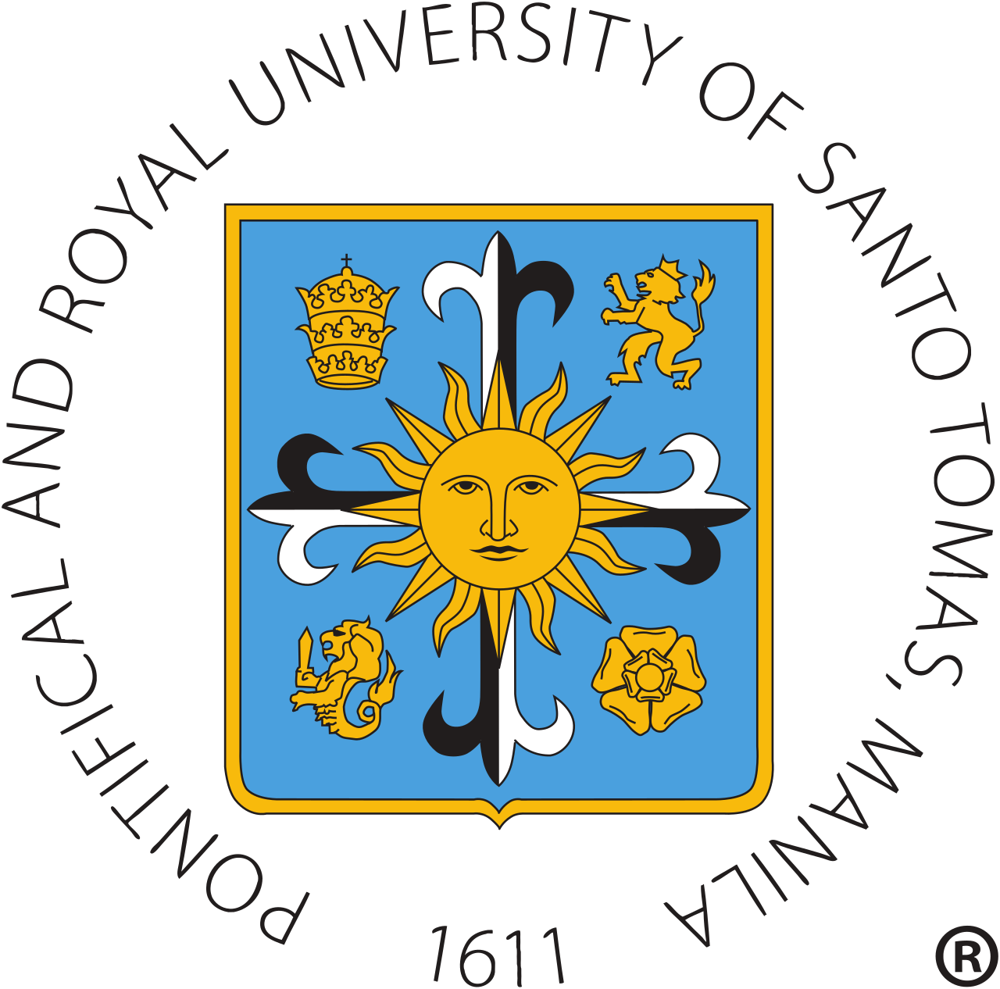

Don Vito Jeron L. Reyes
Future lawyer, professor, or priest. Lover of literature, history, and justice. Class president, Mr. Bosconian winner, and a dreamer on a mission.
📍 Currently at Don Bosco Technical College (Grade 5 – Class of Sandor) → heading to UST from Grade 7 to college.
Say hello to me🌟 Who I Am & Where I Come From
Growing up in Tondo, Manila
I was born on February 13, 2014 and raised in the vibrant streets of Tondo, Manila. It's a place that taught me early on about hard work, community, and dreaming big despite challenges. Every day, I see people helping each other — and that's why I want to serve others when I grow up.
I'm proud to say: “Tondo ang ugat ko, at doon ako kumuha ng lakas.” (Tondo is my root, and from there I draw my strength.)
My Love for Learning & Leadership
My favorite subject is Araling Panlipunan (Social Studies) — especially history, political science, and law. I also love literature and writing. I believe stories can change the world.
At Manila Cathedral School (Grades 1–4), I was Class Vice President (Grade 3) and Class President (Grades 3–4). That’s where I discovered that leading with kindness is the best kind of leadership.

Don Bosco – My Current Home
I transferred to Don Bosco Technical College – Mandaluyong in Grade 5 and I'm planning to stay until Grade 6. I'm part of the Class of Sandor, a group of awesome classmates who push me to be better every day.
Last school year, I won Mr. Bosconian (Grade 5) and became 4th Runner Up in the Bosconian Quill (a journalism competition). These moments remind me that I can make a difference through confidence and words.
🎓 My School Journey (So Far)
Manila Cathedral School · 2019–2023
Grades 1 to 4 — from a shy kid to a class president. I learned about faith, discipline, and the power of serving others. Their motto: “Initium Sapientiae Timor Domini” (The fear of the Lord is the beginning of wisdom).
⚙️ Don Bosco Technical College · Grade 5 – present (until Grade 6)
Class of Sandor — a section full of energy and brotherhood. I'm learning technical skills + values like reason, religion, and kindness. Achievements here include Mr. Bosconian and Bosconian Quill awardee.

✨ Future: University of Santo Tomas (Grade 7 → College)
My dream school is UST — the oldest university in Asia. I want to take up humanities, then law or theology. I believe UST will shape me into the lawyer, professor, or priest that I dream to be.
Why UST? Because of its motto: “Veritas in Caritate” (Truth in Charity). That’s exactly how I want to live my life.
🏅 My Proudest Moments
🏆 Mr. Bosconian Winner – Grade 5

Representing Don Bosco’s values of confidence, charm, and service. This competition taught me that being yourself is your greatest strength.
✍️ Bosconian Quill – 4th Runner Up (Journalism)

A writing competition that proved my love for words can lead to amazing things. This fuels my dream to become a lawyer (using arguments) or a professor (sharing knowledge).
👔 Class President (Grades 3–4) & Vice President (Grade 3)

Leading my classmates at Manila Cathedral School was a big responsibility — and I loved every moment! I learned how to listen, help solve problems, and speak for others.
💭 My Three Callings & What I Love
Lawyer
I want to defend the truth, fight for justice, and help people who cannot speak for themselves. The law is a tool for fairness.
Professor
I love teaching and sharing knowledge. As a professor, I can inspire young minds — especially in history, literature, or political science.
Priest
To serve God and the community, bringing faith and compassion to those who need it. A life of prayer and service is a beautiful path.
My Favorite Subjects & Interests
- Araling Panlipunan (Social Studies) – especially history, political science, and law
- Literature and Writing – I read novels, essays, and even legal articles for fun
- Public Speaking & Debate – because words can change minds
I believe that understanding the past helps us build a better future. That's why I study history so seriously — and why I want to be a lawyer or professor someday.